Preferences (and Project
Properties)
Last revised
11/17/2020.
Contact us.
Table of Contents
Preferences are user-settable parameters that control the way the SADL
environment behaves during editing and during inference. In the Eclipse
environment, preferences can be set at the workspace level or at the
project level. Workspace preferences are set from the Windows
dropdown menu.
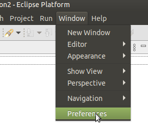
To set preferences in Eclipse at the project level, select the desired
project and request Project Properties, either from the Project
dropdown menu or from the project context menu in Project Explorer.
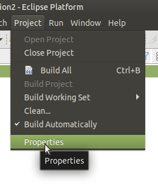
The SADL preference page in Eclipse looks like this.
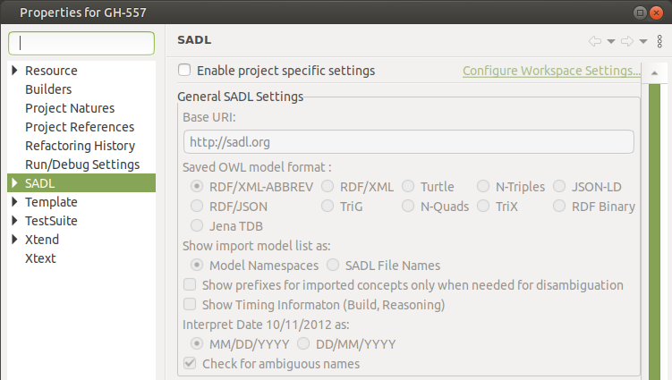
By default everything is disabled and the link in the upper-right takes
the user to the workspace preferences. To enable project-specific
preferences, check the checkbox with the label "Enable project specific
settings". Note that the project preferences are initially set to the
workspace preferences.
If SADL in the left-side navigation menu of project properties is
expanded, Reasoner Preferences becomes visible as a menu choice
and, if selected, allows a reasoner and an associated translator to be
specified for the project. Note that Reasoner Preferences can only
be specified at the project level. Reasoner Preferences are NOT
Eclipse preferences and are sometimes referred to as project properties.
These are stored in the project's OwlModels folder in the configuration.rdf
file. This file will carry the Reasoner Preferences forward to the
Knowledge as a Service (KaaS) environment.
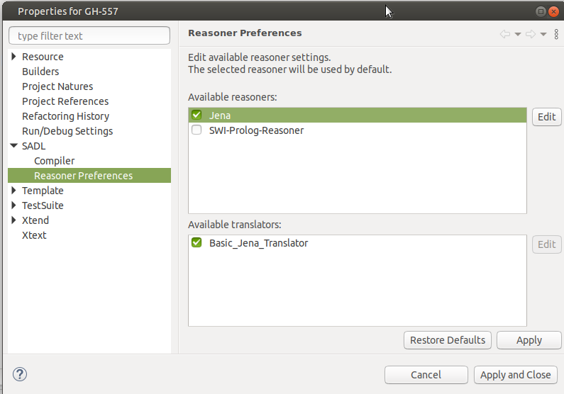
By clicking on a reasoner (not on the checkbox in front of the reasoner,
but on the name of the reasoner) the reasoner is highlighted and the Edit
button is made active. Clicking the Edit button takes one to the
reasoner-specific settings available for the particular reasoner selected.
For example, the default Jena reasoner has the following settings.
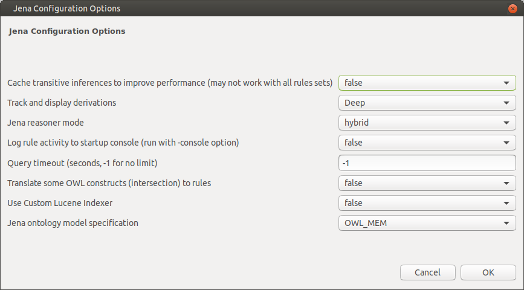
Configuration settings for a specific reasoner are discussed in the
documentation for that reasoner.
In the Eclipse environment, General SADL Settings include the
following.
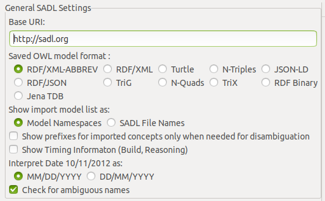
- Base URI: this should be a valid URI (starting with "http://")
and will be used if content assistance is requested after the uri
keyword. The name of the SADL file will be appended to create the
inserted URI for the model.
- Saved OWL model format: this preference specifies the
serialization format to be used for the OWL models translated from the
SADL models. All but the last, Jena TDB, are formats for OWL
files saved in the OwlModels folder. Jena TDB is a
binary triple store format and, if selected, will result in a triple
store of this type being created under the OwlModels folder. The
triple store will contain a named graph for each SADL model in the
project.
- Show import model list as: if content assistance is requested
after the import keyword, this preference determines whether the
resulting list will display model namespaces or SADL file names for
selection.
- Show prefixes for imported concepts only when needed for
disambiguation -- if checked, lists of model concepts shown as a
result of a request for content assistance will only show a prefix
before the name if the name would otherwise be ambiguous, i.e., there
are multiple models in the project that define concepts with that name.
- Show Timing Information (Build, Reasoning) -- if checked, the
amount of time required to build or do reasoning will be displayed in
the console window.
- Interpret Date 10/11/2012 as: this preference controls whether
dates using this format are interpreted as month first or day first.
- Check for ambiguous names -- if checked, names will be
checked to see if they are ambiguous, meaning that more than one
namespace known to the current model contains a concept with that name.
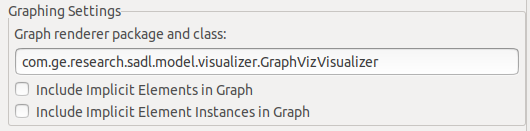
- Graph renderer package and class: specifies the implementation of the
IGraphVisualizer Java Interface class to be used to render graphs. The
value shown is the renderer distributed with the SADL IDE and requires
download of GraphViz, see Visualization.
- Include Implicit Elements in Graph -- if checked, concepts from
the implicit models SadlImplicitModel.sadl, SadlBuiltinFunctions.sadl,
SadlListModel.owl, and SadlBaseModel.owl will be included in rendered
graphs.
- Include Implicit Element Instances in Graph -- if checked,
instances of concepts from the implicit models SadlImplicitModel.sadl,
SadlBuiltinFunctions.sadl, SadlListModel.owl, and SadlBaseModel.owl will
be included in rendered graphs.
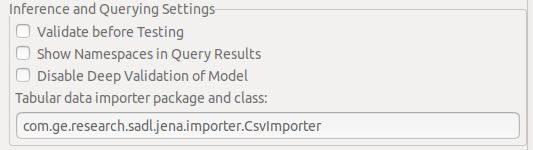
- Validate before Testing -- if checked AND if the specified
reasoner is capable of doing model validation, the current model and
imported models will be validated before doing inference.
- Show Namespaces in Query Results -- if checked, concepts found
in query results will include namespaces (will be shown as complete
URIs).
- Disable Deep Validation of Model -- for reasoners capable of
doing validation, checking this preference disables deep validation,
thus improving performance.
- Tabular data importer package and class: SADL includes the
capability to provide a mapping to import tabular data into an OWL
model. Importers must implement the ITabularDataImporter Java Interface
class. The importer shown is for comma-separated-values (CSV) data.
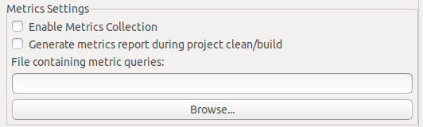
- Enable Metrics Collection -- if checked, metrics will be
generated as models are being built.
- Generate metrics report during project clean/build -- if
checked, a metrics report will be generated (provided valid queries are
provided) during clean/build.
- File containing metric queries: identifies a file containing
SPARQL queries to be used to generate metrics reports. The Browse
button can be used to locate the query file.
Note: metrics generation and reporting is not completely implemented in
SADL at present.
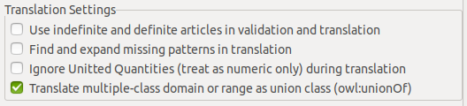
- Use indefinite and definite articles in validation and translation
-- if checked, rules and queries can be written without explicit
variables. Rather, an implicit variable is created by an indefinite
article in front of a class name and references to the variable are
written with a definite article. Ordinals are used if multiple variables
of the same type are needed. See Definite
and Indefinite Articles.
- Find and expand missing patterns in translation -- if checked,
graph patterns in rules and queries will be checked to see if they are
incomplete but unambiguous. If so, they will be expanded to complete
graph patterns in translation. See Implied and Expanded Properties.
- Ignore Unitted Quantities (treat as numeric only) during
translation -- if checked, numbers followed by units will be
treated as if they were numbers only, rather than being translated into
an instance of UnittedQuanitity.
- Translate multiple-class domain or range as union class
(owl:unionOf) -- if checked, domains and ranges that are unions
of multiple classes will be translated to explicit owl:unionOf
constructs. Otherwise they will be translated to multiple <property>
rdfs:domain <domain-class> statement. Similarly for range.
Type Checking Settings
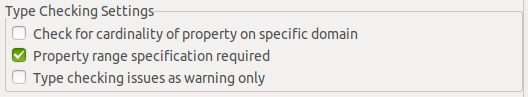
- Check for cardinality of property on specific domain -- if
checked, properties for a given domain class, or a subclass thereof,
will be expected to have a cardinality restriction on that class for
that property. If not a warning will be issued.
- Property range specification required -- if checked, the lack
of a specified range for a property will be considered an error.
- Type checking issues as warning only -- if checked, any type
checking issues will be reported as warnings and not errors. This allows
OWL models to be build even if type errors are reported.
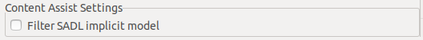
- Filter SADL implicit model -- if checked, content assistance
will not include any concepts from the SadlImplicitModel.